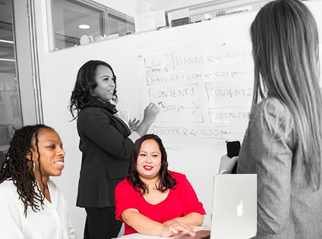

Our Mission
The world is changing. Faith in established systems is crumbling. People prefer opinions to facts. It’s hard to know whom to trust. How can we do better? We’re data scientists and designers, sociologists and strategists, programmers and policy wonks, veterans and upstarts. We’re idealists and realists at the same time. And we all believe that sharing knowledge can help us create a better world. We are Candid. Candid connects people who want to change the world to the resources they need to do it.
Candid.org
@CandidDotOrg
#WeAreCandid
See the world.Make it better.
Our Story
For a combined 88 years, Foundation Center and GuideStar each helped change the world by giving people the information they needed to do good.
But the world faces growing challenges: polarization, climate change, technological revolution, and poverty and inequality. That’s why we combined our talent, technology, data, and leadership to become a new organization, Candid. Now, it’s easier than ever to get the information you need to create change.
Learn More

Work with us
We cultivate talent and collaboration
Candid staff are curious about the world around them and bring excellent technical, analytical, and interpersonal skills. Join us to support the people and organizations making a difference in the world.
Learn More
Funding Us
How are we funded?
Support from our generous donors allows us to maintain and strengthen our programs and services, most of which are free. In addition, earned income covers more than half of our operating budget.
Find out more
Why support us?
Candid provides trusted information, data-driven tools, research, analysis, best practices, and trainings to help the social sector increase its ability to affect change and transform lives. When you support Candid, you support the millions of people who depend on our programs and services to make the world a better place.
Donate